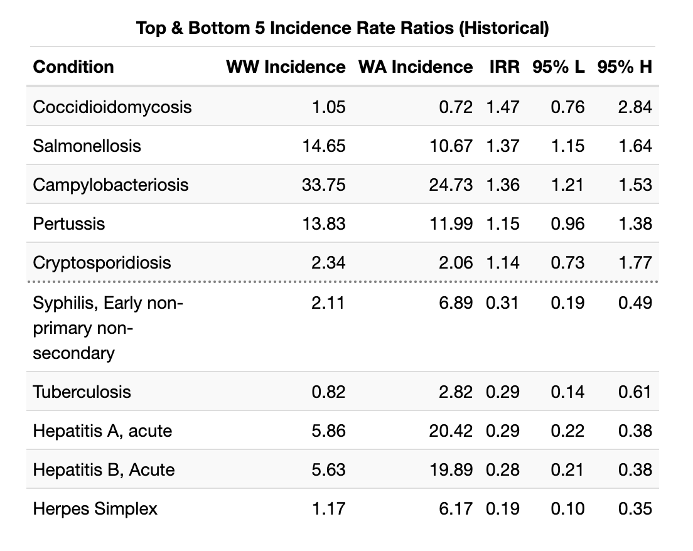
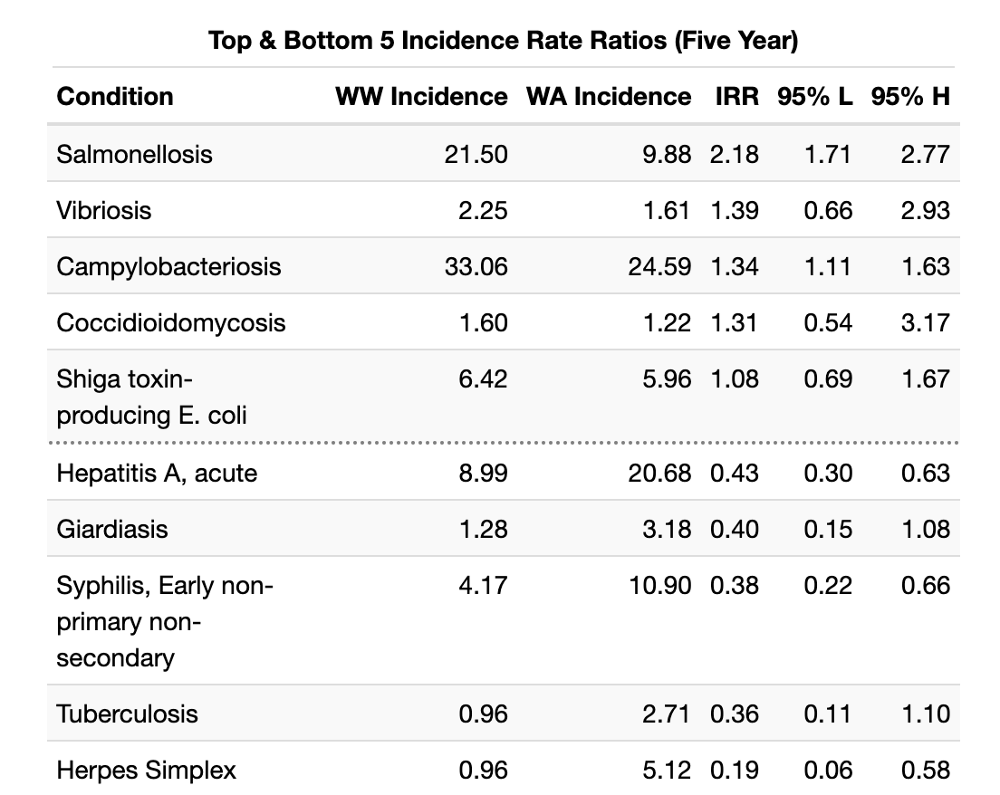
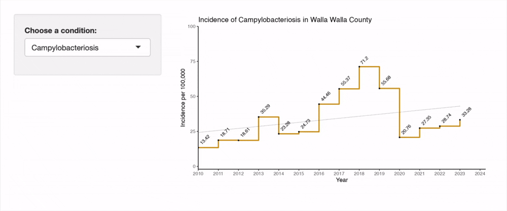
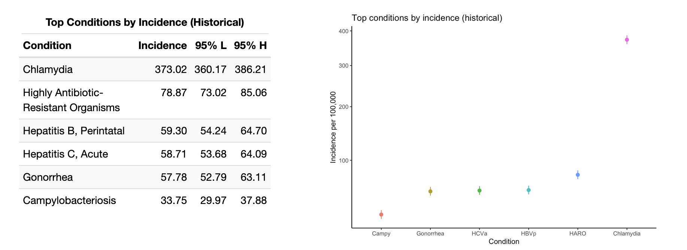
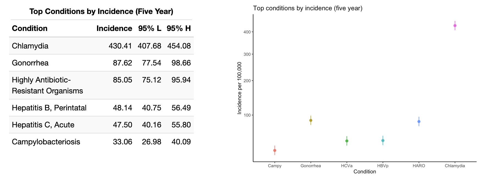
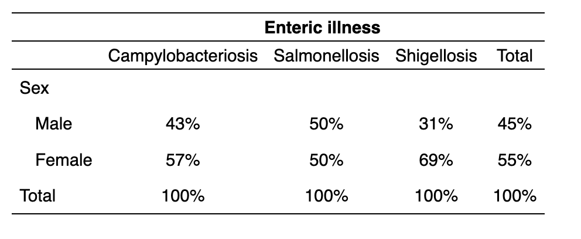
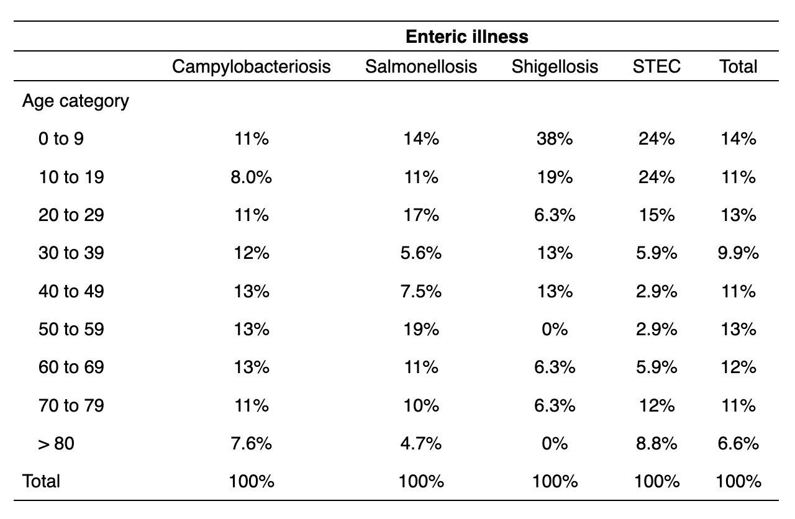
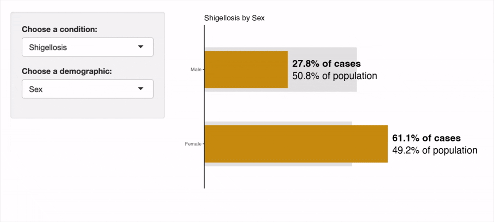
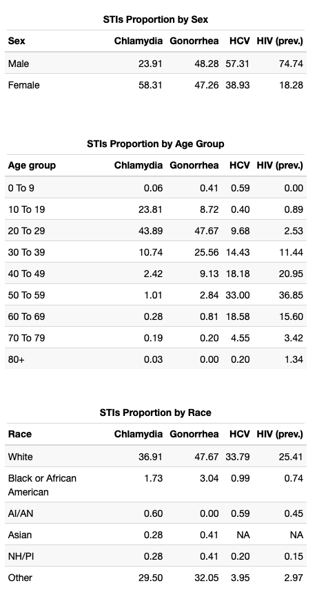

Notifiable Conditions in Walla Walla County, WA
Image credit: Lynn Suckow from Walla Walla, WA, USA, CC BY-SA 2.0, via Wikimedia Commons
{kind=link}
This is an adaptation of a report given to the Walla Walla County Department of Community Health. It does not include any raw data per the terms of the DUA signed with the County, and as such some interactive apps have been replaced with recordings to demonstrate their intended functionality.
Introduction
Walla Walla County has historically experienced a relatively high burden of enteric disease relative to the rest of Washington State. These, and other notifiable conditions, are of significant public health importance due to their high virulence. Understanding the historical trends and distribution of notifiable conditions will guide public health interventions and epidemiological investigations in Walla Walla County.
This project was motivated by a desire to compile a historic database of notifiable conditions data from 2013 to 2023. I then perform some basic analyses to understand which groups shoulder the greatest burden of disease in the County.
Methodology
Walla Walla County Counts and Incidence Rates
Walla Walla County notifiable condition counts were compiled primarily from WDRS data. Not all notifiable conditions were used. Table S1 lists all conditions for which data was identified and compiled in the WWCDCH in-house data storage file. Hepatitis, Chlamydia, Gonorrhea, Syphilis, rare STI, and HIV case counts were obtained by request from Washington DOH and were presented in aggregated format as well as stratified by race/ethnicity, sex, and age. Enteric diseases were obtained from WDOH where they were presented by individual case with dates of illness and demographic data. Case counts for elevated childhood blood lead levels were obtained from the Washington Tracking Network data portal. Of note, WTN data was pre-suppressed for low counts, meaning there are some data holes in the Walla Walla County lead case count in-house data. Since suppression occurred at the same benchmark value (≤ 5 cases), incidence rates for the in-house data storage remained unaffected.
Due to differences in the years reported from each data source, some values needed to be sourced elsewhere. Most notifiable conditions sources from WDRS were presented only from 2013 through 2023. Therefore, DOH Annual Communicable Disease reports were used to supplement 2010 through 2012 numbers. Prevalent HIV cases were not provided at the county level through DOH Communicable Disease reports prior to 2013, so this data was sourced from the CDC National Center for HIV , Viral Hepatitis, STD, and Tuberculosis Prevention (NCHHST) AtlasPlus data portal for 2010 through 2012.
Incidence rates were calculated per 100,000 population per the Population Interim Estimates (PIE) by Public Health – Seattle & King County. Incidence rates calculated by DOH or other data sources were not used, and were calculated within the in-house data storage file instead.
Washington State Counts and Incidence Rates
Washington State notifiable condition counts were compiled primarily from DOH Annual Communicable Disease reports. Not all notifiable conditions were used. Table S1 lists all conditions for which data was identified and compiled in the WWCDCH in-house data storage file. Hepatitis and Syphilis case counts were obtained by request from Washington DOH and were presented in aggregated format as well as stratified by race/ethnicity, sex, and age. Case counts for elevated childhood blood lead levels were obtained from the Washington Tracking Network data portal.
Due to changes in Annual Communicable Disease report construction and reporting guidelines, some less common conditions such as viral hemorrhagic fevers or Anthrax had to be sourced from CDC National Notifiable Diseases Surveillance System (NNDSS) reports. Seasonal influenza deaths for Washington State were sourced from WDOH Influenza Surveillance Season Summaries.
Incidence rates were calculated per 100,000 population per the Population Interim Estimates (PIE) by Public Health – Seattle & King County. Incidence rates calculated by DOH or other data sources were not used, and were calculated within the in-house data storage file instead.
Notes on Data Formatting or Structure
- "Brucellosis" and "Burkholderia infection" were originally combined into one line of the `IN-HOUSE Data Storage` document. These conditions were separated. "Melioidosis" and "glanders", two similar conditions caused by species of Burkholderia bacteria, were included as their own lines in the storage document but not reported as such in DOH reporting. These lines were collapsed into the aggregated "Burkholderia infection" line.
- "Arboviral diseases" exists as an aggregate in the `IN-HOUSE Data Storage` document, but case counts for “arboviral diseases” did not include Yellow Fever or West Nile Virus as these existed separately in the document. Information was available through DOH for these conditions allowing for their consistent disaggregation.
- "Tickborne diseases" were an aggregated case count of anaplasmosis, babesiosis, ehrlichiosis, spotted fever rickettsiosis, and tick paralysis.
- "Poliomyelitis" and "polio" were collapsed into “polio”.
- Influenza data is seasonal instead of annual. Counts and rates are listed under the year in which the flu season in question begins. For example, if Walla Walla County had 36 seasonal influenza deaths in '2010' , this indicates 36 seasonal influenza deaths in the 2010 – 2011 flu season.
-
Certain data holes still exist after supplementation from a wide variety of
sources. The following conditions and years do not have case counts or
incidences associated with them for Washington State:
- Anthrax (2010 – 2015, 2023)
- Hepatitis C, perinatal (2010 – 2017)
- Hepatitis D (2018 – 2021)
- Hepatitis E (2018 – 2023)
- Highly Antibiotic-Resistant Organisms (HARO) (2010 – 2011)
- Influenza, Novel or unsubtypable strain (2010 – 2016, 2023)
- Unexplained Critical Illness or Death (2010 – 2023)
- Vaccinia Transmission (2017 – 2023)
- Varicella Death (2012 – 2015, 2023)
- Viral Hemorrhagic Fever (2010 – 2015, 2023)
- Lead, Child Blood (2012 – 2015, 2017 – 2018, 2020 -2023)
- Rabies, Suspected Human Exposure (2010)
Results and Discussion
Note on rate suppression: All presented tables and visualizations have been edited to ensure no small cell sizes or corresponding rates are displayed. This is to protect individuals from being re-identified in areas with a small population, as well as to control for rate instability. Suppression criteria are (n ≤ 5) for general communicable diseases, and (n ≤ 16) for STIs.
General incidence rates in Walla Walla County
Incidence rates for notifiable diseases in Walla Walla County are generally low, with most conditions having had no cases since 2010. There are several conditions which depart from the larger trend set by Washington State. These are presented in the following tables, first for 2010 - 2023, by incidence rate ratio:

And for the last five years of extant data:

It is worth noting that most of these IRR extremes are due to slight fluctuations from zero for Walla Walla County incidence. Walla Walla does appear to have a disproportionate incidence of Salmonellosis and Hepatitis C (HCV) in recent years. Salmonellosis incidence surged in 2019, up from 9.71 to 21.29 per 100,000, and has remained high since then. HCV incidence spiked in 2018, from a baseline near 50 per 100,000 to over 127 per 100,000 population. It has since returned to at or below the previous Walla Walla baseline. It is notable that the confidence interval for the HCV incidence rate ratio crosses a null value of 1 (0.80 - 44.13). These calculations are limited by the sparseness of data available for rare conditions.
Walla Walla County does have lower rates of Herpes Simplex (HSV) and Syphilis than Washington State, on average. From 2010 to 2018, HSV rates hovered around 40 per 100,000 population in Walla Walla, but have since fallen so low as to be suppressed in this presentation. Syphilis has historically maintained a rate low enough to be suppressed, though in recent years has gradually declined from near 40 per 100,000 in 2021 to just over 25 per 100,000 in 2023.
The below is a recording of an interactive tool I built for this project. This tool is a helpful way to explore incidence rates in Walla Walla County since 2010. Gray shaded regions represent years where data is suppressed (per the criteria listed at the beginning of Results section). Broken segments of the line chart represent rare instances of missing data.

The top five notifiable conditions are presented in the below tables for Walla Walla county. These insights are best combined with the earlier IRRs to better understand which conditions constitute the major burden of disease in the County. We see that chlamydia infections are far and away the most common notifiable condition, and are joined at the top of the list with gonorrhea. This makes good sense given the widespread prevalence of these bacterial STIs nationwide. Do take note of the square root transformation on the y-axis in the below graphs in order to accommodate the chlamydia incidence.
The high incidence rates for perinatal HBV and acute HCV infections are concerning, and it's likely that acute HCV incidence in part drove the high IRR for HCV in Walla Walla versus Washington State (5.94, 95% CI: 0.80 - 44.13).
Campylobacteriosis infections remain in the top six conditions both historically and in the most recent five years of data. Examine the trend using the interactive tool above to see a gradual increase since 2010, punctuated by a steep increase in the latter half of the 2010s and a sudden drop during the Covid pandemic. Since 2020, it appears that the gradual upwards trajectory ahs resumed in Walla Walla County.


Foodborne Diseases

Foodborne illnesses for the purposes of this analysis include campylobacteriosis (Campylobacter spp.); salmonellosis (Salmonella spp.); shigellosis (Shigella spp.) and Shiga toxin-producing E. coli (or STEC). Notably, sex data was not available for STEC cases and is thus lacking in this analysis. Of these, campylobacteriosis was the most common condition. It was the sixth most common notifiable condition by incidence rate both historically and in the most recent five years of analysis.
Incidence of foodborne illnesses were relatively evenly distributed among males and females for both campylobacteriosis and salmonellosis. However, shigellosis skewed heavily towards females (69%) over males (31%). This is almost certainly anomalous, as there was only one year with non-suppressed data for shigellosis (2019), indicating a generally low incidence and potential rate instability when stratifying by sex or other factors.

For both campylobacteriosis and salmonellosis, there was no discernible trend or heterogeneity in distribution by age, on visual inspection. However, shigellosis was concentrated heavily in the 0 to 9 age category with a general skew towards younger individuals. This is similar to STEC, which had a pronounced skew towards those under 20 years old. Neither of these conditions had a large number of cases (STEC: n = 37; Shigellosis: n = 18), so it remains possible that individual outbreaks or transmission patterns account for some of this heterogeneity. However, epidemiologic literature does suggest higher incidence of both in young children.
Analyzing incidence stratified by race and ethnicity proved challenging due to different practices across data sources and years of collection. For example, some sources sorted their data into more granular race categories, while others eliminated significant portions of the population in an attempt to aggregate categories. Few sources allowed for distinctions of ethnicity and race together ("Black, Hispanic" vs. "Black, non-Hispanic"). This may have led to the large proportion of cases marked "Other" for race and "Hispanic or Latino/a" for ethnicity. However, "Other" also includes, for some datasets, individuals of two or more races, and small racial groups that were not adequately described amongst the provided response options. The end effect of these conflicting data practices, and of standardizing race categories for the present analysis, was a very high percentage of "Other" in the racial incidence data for both foodborne illnesses and STIs. It will be important when considering the following results to examine both the race and ethnicity data side by side for the best insights.
For most foodborne diseases, the majority of cases occurred in white individuals, except for Shigellosis ("Other race": 50% of cases; "White": 33.3% of cases). However, in all instances, "Other race" was disproportionately represented amongst the ill, indicating a significant issue of health equity. This is not entirely explained by cases in the Hispanic or Latino/a population, since these cases represented only a subset of the "Other race" cases. This indicates that small racial groups and multiracial individuals are also at increased risk for foodborne illness in Walla Walla County.
The recording of the interactive tool below shows its utility for visually comparing the proportion of cases in Walla Walla County falling into each subgroup, as compared to the subgroup's representation in the overall population. This visually aids the user in understanding the disparities in disease burden present in the County. An orange cases bar extending past the gray population bar indicates a group holds a disproportionately high burden of disease. The opposite, an orange cases bar being much smaller than the gray population bar indicates a group holds a disproportionately low burden of disease.

Sexually Transmitted Infections

STIs analysis is limited to those conditions with enough cases to avoid suppression over the majority of the dataset (chlamydia, gonorrhea, total HCV, and prevalent HIV). There is missingness in this data, and not all values presented will total 100%.
As epidemiological literature supports, we see a higher prevalence of chlamydia in female individuals than in males. However, HIV prevalence and HCV are both strongly skewed towards males while gonorrhea is more homogeneously distributed.
Chlamydia and gonorrhea are both concentrated most densely in 20 to 29 year olds, although chlamydia skews slightly towards teenagers while gonorrhea skews the opposite way, into the 30 to 39 year age group. Both are rare outside of this window. In contrast, HCV and HIV are both most densely concentrated in 50 to 59 year olds with some spillover on either side, into the 40-some and 60-some age groups.
The same caveats discussed for race and ethnicity in foodborne illnesses apply to our analysis of sexually transmitted infections. However, the aggregation problem is likely more severe simply due to the increased variety and discordance of the datasets STI incidences are pulled from for this project. Notice for example that DOH data provided for HCV and HIV did not include a racial category for "Asian", resulting in missingness here. Again, we see large proportions of STI incidence falling into the "Other" race category, which we assume comprises many distinct identities with different cultural and socioeconomic experiences, impacting their health outcomes in dissimilar ways.
It is also important to note just how much missing data there is for racial categories in the STI analysis. For example, we have racial category data for less than 30% of prevalent HIV cases in Walla Walla County. This limits the insights we can gain from the dataset severely.
We can supplement our understanding of the incomplete racial data with the available data on ethnicity. For each communicable disease, we have an estimate of burden among the Hispanic or Latino/a population:
- Chlamydia: 24.91%
- Gonorrhea: 27.18%
- HCV: 2.77%
- HIV prevalence: 23.48%
For all except HCV, which likely suffers from similar issues with missing ethnicity data given its lack of racial category data (total: 39.6%), there is a disproportionately high burden of disease in the Hispanic or Latino/a population. Despite the limitations of the data, this conclusion is likely sound given its replication in the epidemiological literature.
Supplements
Table S1 — Data Sources
Communicable diseases are listed by the data source used to inform this project.
| Source | Conditions |
|---|---|
| WDRS General Communicable Disease (GCD) reports DOH Annual Reports |
Anthrax; Arboviral Disease; Botulism Food; Botulism Infant; Botulism Wound; Brucellosis; Burkholderia Infection (Melioidosis or Glanders); Cholera; Coccidioidomycosis; Cryptococcus gattii; Cryptosporidiosis; Cyclosporiasis; Diphtheria; Giardiasis; Haemophilus influenzae; Hantavirus Pulmonary Syndrome; Hemolytic Uremic Syndrome (HUS); Hepatitis D; Hepatitis E, Acute; Herpes Simplex; Highly Antibiotic-Resistant Organisms (HARO); Hypersensitivity Pneumonitis, Occupational; Influenza, seasonal; Influenza, Novel or unsubtypable strain; Legionellosis; Leptospirosis; Listeriosis; Lyme Disease; Malaria; Measles; Meningococcal Disease; Mpox (Monkeypox); Mumps; Pertussis; Plague; Polio; Prion Diseases, Human (CJD); Psittacosis; Q Fever; Rabies, Human; Rabies, Suspected Human Exposure; Relapsing Fever; Rubella; Shellfish Poisoning, Paralytic, Domoic Acid, or Diarrhetic; Tetanus; Tickborne Disease; Trichinosis; Tuberculosis; Tularemia; Typhoid fever; Unexplained Critical Illness or Death; Vaccinia Transmission; Varicella Death; Vibriosis; West Nile Virus Disease; Yellow Fever; Yersiniosis |
| PHIMS-STD via DOH request DOH Annual Reports |
Chancroid; Chlamydia; Gonorrhea; Lymphogranuloma; Syphilis, All; Syphilis, (Primary and Secondary); Syphilis, Early non-primary non-secondary; Syphilis, Late/unknown duration; Syphilis, Congenital |
| WDRS via DOH request | Hepatitis A, acute; Hepatitis B, All; Hepatitis B, Acute; Hepatitis B, Chronic; Hepatitis B, Perinatal; Hepatitis C, All; Hepatitis C, Acute; Hepatitis C, Chronic; Hepatitis C, Perinatal |
| HIV Surveillance Report via DOH request CDC NCHHST AtlasPlus tool |
HIV, new cases; HIV, prevalent HIV cases |
| Washington Tracking Network | Lead, Child Blood |
| DOH Data Request | Campylobacteriosis; Salmonellosis; Shiga toxin-producing E. coli ("STEC"); Shigellosis |
Acknowledgements
Much thanks to the epidemiology staff at Walla Walla County Department of Community Health for supplying the data and oversight for this project. Thank you to the UW Student Epidemic Action Leaders program for making this work possible.